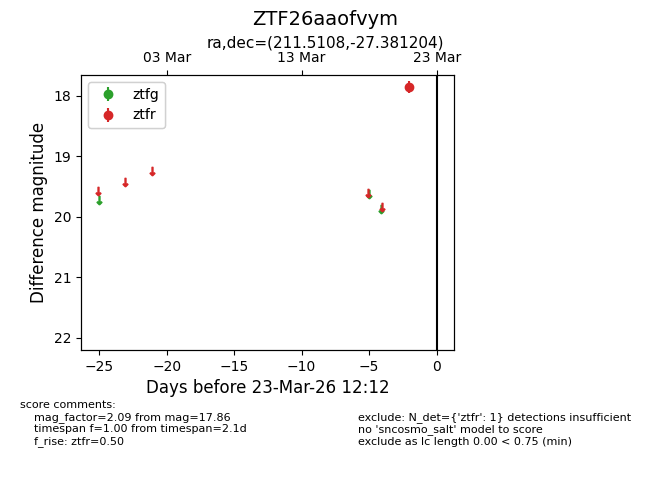
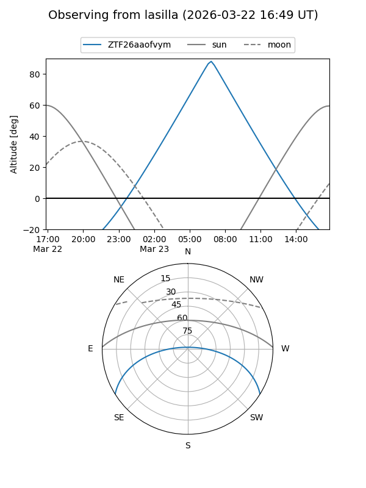
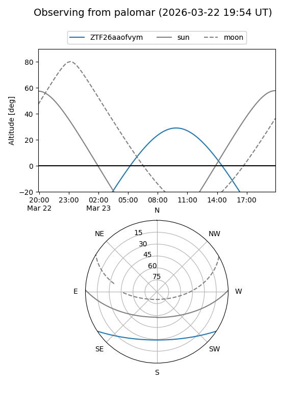

ZTF26aaofvym
Target ZTF26aaofvym at 2026-03-23 12:16
Aliases and brokers:
FINK: link
Lasair: link
ALeRCE: link
alt names
ZTF26aaofvym (ztf,fink_ztf)
Coordinates:
equatorial (ra, dec) = 211.5108,-27.38120
equatorial (HMS+DMS) = 14:06:02.59,-27:22:52.33
galactic (l, b) = (322.6359,+32.62002)
Flags:
Photometry:
last ztfr=17.86
1 ztfr detections
Lightcurve

Visibility


Additional plots